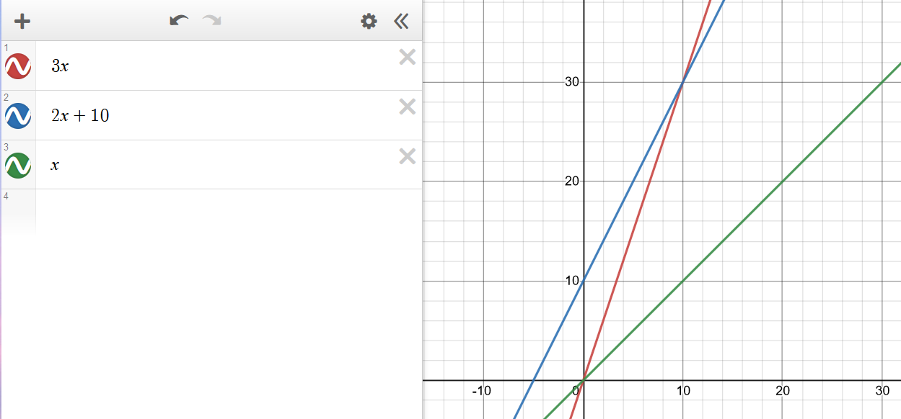

Running time
To assess how good an algorithm is, we often use the metric of running time compared with the size of the input to the algorithm.
- Worst case \(O(n)\) – which we usually focus on, since it is both easy to analyse and useful
- Average Case \(\Theta(n)\) – often more difficult to assess
- Best Case \(\Omega(n)\) – often not sufficiently representative of the algorithm
Experimental trials
One of the ways to assess the running time is to write a program implementing the algorithm, then running for inputs of different sizes. Then fit curves to a plot of the results to try to classify the algorithm.
This has a few drawbacks though
- Need to implement the algorithm – might be difficult.
- Many ways to implement – reason for analysis is to decide which one to implement
- Not all inputs can be covered – not representative
- Dependent on machine hardware and software environments – difficult to equate between different tests, same specs and same environment needed.
Theoretical analysis
Theoretical analysis is given a high-level description of the algorithm (not a full implementation), expressing the running time as a function of the input size \(n\).
Pseudocode is used for this high-level description, which lies between English prose and program code. It has no formal syntax, and allows omission of some aspects of the implementation to make analysis easier.
This has the benefits of:
- Allowing all possible inputs to be covered
- Being independent of machine hardware and software environments, so easier to equate between different tests
Common functions of running time

Random Access Machine (RAM) model
To analyse programs, we use a simplified model of how computers work to help think about the time an high level operation takes to run by expressing it as fundamental operations which are equivocal to real computers.
In the RAM model, we consider a computer with (assumptions):
- A single CPU executing a single program
- An arbitrarily large indexable array of memory
- A set of registers memory can be copied into
- Basic arithmetic and memory allocation operations
Generally, we tend to abstract beyond this model to just consider a set of primitive operations (usually single lines of pseudocode) that take constant time irrespective of input size in the RAM model.
We then analyse performance by counting the number of operations needed, as their number is proportional to running time.
This allows us to express the running time of the program as being between the best and worst cases of number of operations needed, multiplied their running time
- Let \(T(n)\) denote the running time, \(b(n)\) the best case, \(w(n)\) the worst case, and \(t\) the time taken for 1 primitive operation
- The running time is bounded as \(t \times b(n) \leq T(n) \leq t \times w(n)\)
- This metric of running time \(T(n)\) is not dependent on machine hardware or software environment – it is an intrinsic property of the algorithm.
Asymptotic Algorithm Analysis
Asymptotic algorithm analysis is a way we can take pseudocode and use it to analyse an algorithm.
We most commonly conduct worst case analysis, \(O(n)\), but there is also \(\Omega(n)\) (best case) and \(\Theta(n)\) (average case).
Big-O Notation
Big-O is a way of quantifying the running time of an algorithm, allowing easy comparison. Given the functions \(f(n)\) and \(g(n)\), we say that \(f(n)\) is \(O(g(n))\) if:
\[\begin{align} &f(n) \leq g(n) \cdot c,& &\text{for all } n \geq n_0, n \in \mathbb{N}& \\ && &\text{with some positive} \\ && &\text{constants } c \text{ and } n_0 \end{align}\]Informally, this means that \(f(n)\) is “overtaken” by \(g(n)\) for all values above some threshold \(n _0\) usually we consider \(n \rightarrow \infty\), allowing scaling by a linear factor \(c\).
This can be phrased as “\(f(n)\) is \(O(g(n))\) if \(g(n)\) grows as fast or faster than \(f(n)\) in the limit of \(n \rightarrow \infty\)” (Source)
Big-O notation, thus, gives an upper bound on the growth rate of a function as its input size n tends to infinity. Hence, \(f(n)\) is \(O(g(n))\) means that the growth rate of \(f(n)\) is no greater than that of the growth rate of \(g(n)\).
Big-O of a Function
Informally, the Big-O of a function is the term that grows the fastest, as it will come to dominate for a very large n, and we then just pick n0 where that term is dominating, and use c to shift the function to fit.
So, if \(f(n)\) is a polynomial of degree \(d\), then \(f(n)\) is \(O(n^d)\), as we can drop all but the fastest growing term.
When writing Big-O, we:
- Try to use the smallest possible class of functions which fulfils the criteria.
- E.g. O(n) not O(n2), whilst both technically are Big-O of linear functions. (Why is O(n2) valid for linear functions?)
- Use the simplest expression of the class.
- E.g. O(n) not O(5n).
Worst Case Analysis \(O(n)\)
To prove something is \(O(f(n))\), we need to show that we can pick a \(c\) and an \(n\) which satisfy the condition.
To prove something is not ,\(O(f(n))\) we show that there is no \(c\) for any arbitrarily large \(n_0\) which satisfies the condition.
To analyse
- Consider the worst-case number of primitive operations that the algorithm could require to run as a function of its input size.
- Express this derived function in Big-O notation.
An example, of this being formally calculated (taken from Data Structures and Algorithms in Java, Goodrich, Tamassia, Goldwasser) is shown below:
Consider the function \(2n + 10\). To show that it is \(O(n)\), we take:
\[\begin{align} 2n + 10 &\le c \cdot n \\ cn-2n &\ge 10 \\ n &\ge \frac{10}{c-2} \end{align}\]Hence, picking c = 3 and n0 = 10 the condition is satisfied.

Big-Omega \(\Omega(n)\)
\(\Omega(n)\) looks at best cases. \(f(n) = \Omega(g(n))\) if
\[\begin{align} &f(n) \ge g(n) \cdot c,& &\text{for all } n \geq n_0, n \in \mathbb{N}& \\ && &\text{with some positive} \\ && &\text{constants } c \text{ and } n_0 \end{align}\]This means that \(g(n)\cdot c\) will always be lesser than or equals to \(f(n)\) after a certain threshold \(n_0\). You can think of it as a lower bound to \(f(n)\), where you’re saying that \(f(n)\) cannot get any “better/faster” than this.
Big-Theta \(\Theta(n)\)
\(\Theta(n)\) looks at average cases. We say that \(f(n) = \Theta(g(n))\) when \(f(n)\) is asymptotically equal to \(g(n)\), this happens if and only if
\[f(n) = \Theta(g(n)) \iff f(n) = O(g(n)) \land f(n) = \Omega(g(n)) \\ \begin{align}\\ &g(n)\cdot c_\Omega \le f(n) \le g(n) \cdot c_O,& &\text{for all } n \geq n_0, n \in \mathbb{N}& \\ && &\text{with some positive} \\ && &\text{constants } c_O, c_\Omega, \text{ and } n_0 \end{align}\]Here this means that for a specific \(g(n)\), we can scale it by two variables \(c_O\) and \(c_\Omega\) and \(f\) will be always “fit in-between” the two scaled \(g\)s after a certain threshold \(n_0\).